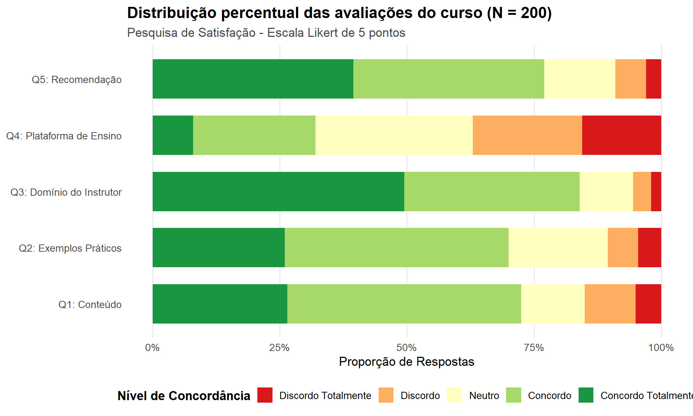

# 1. Carregando os pacotes necessários
library(dplyr)
library(tidyr)
library(ggplot2)
library(gtsummary)
# 2. Definindo a semente para reprodutibilidade
set.seed(123)
# 3. Definindo os níveis ordenados da escala Likert
niveis_likert <- c(
"Discordo Totalmente",
"Discordo",
"Neutro",
"Concordo",
"Concordo Totalmente"
)
# 4. Simulando respostas de N = 200 alunos para 5 questões
n_respondentes <- 200
# Criando distribuições realistas (com diferentes tendências)
df_likert <- data.frame(
Q1_Conteudo = sample(niveis_likert, n_respondentes, replace = TRUE, prob = c(0.05, 0.10, 0.15, 0.45, 0.25)),
Q2_Exemplos = sample(niveis_likert, n_respondentes, replace = TRUE, prob = c(0.03, 0.07, 0.20, 0.40, 0.30)),
Q3_Instrutor = sample(niveis_likert, n_respondentes, replace = TRUE, prob = c(0.02, 0.03, 0.10, 0.35, 0.50)),
Q4_Plataforma = sample(niveis_likert, n_respondentes, replace = TRUE, prob = c(0.12, 0.23, 0.30, 0.25, 0.10)),
Q5_Recomendacao = sample(niveis_likert, n_respondentes, replace = TRUE, prob = c(0.04, 0.06, 0.15, 0.40, 0.35))
) %>%
mutate(across(everything(), ~ factor(.x, levels = niveis_likert, ordered = TRUE)))
# Visualizando as primeiras linhas da base
# head(df_likert)Como você realmente mede o que as pessoas pensam ou sentem?
Na era dos dados, capturar métricas objetivas — como vendas diárias, tempo de permanência em um site ou taxa de cliques — é relativamente simples. Mas o que fazer quando o objeto do seu estudo é subjetivo? Como mensurar o nível de satisfação de um cliente, a motivação de uma equipe ou a concordância de um estudante em relação à metodologia de um curso?
Transformar sentimentos, percepções e atitudes humanas em dados estruturados e analisáveis é um dos maiores desafios da pesquisa quantitativa. É exatamente aqui que entra a Escala Likert, uma das invenções mais influentes e duradouras da estatística comportamental.
Neste artigo, vamos explorar a história da Escala Likert, entender sua lógica de mensuração sob a ótica da Alfabetização de Dados (Data Literacy) e aprender a tabular e visualizar respostas no R utilizando os pacotes {gtsummary} e {ggplot2}.
📜 Rensis Likert
Em 1932, o educador e psicólogo organizacional norte-americano Rensis Likert publicou o clássico artigo “A Technique for the Measurement of Attitudes”. Naquela época, medir atitudes psicológicas exigia métodos complexos, extensos e de difícil operacionalização (como as escalas de Thurstone).
Likert trouxe uma solução simples e elegante: apresentar aos respondentes uma série de afirmações declarativas e pedir que indicassem seu nível de concordância em uma gradação simétrica e ordenada.
Hoje, mais de 90 anos depois, a Escala Likert é o padrão ouro em pesquisas de satisfação de clientes, pesquisas de clima organizacional, estudos de experiência do usuário (UX), avaliações acadêmicas e no célebre Net Promoter Score (NPS).
🧠 O desafio de medir a subjetivadade (e a Alfabetização de Dados)
Um dos pilares da Alfabetização de Dados é reconhecer que dados não são verdades puras caídas do céu; eles são representações construídas da realidade.
Quando aplicamos um questionário, enfrentamos dois grandes riscos de viés: 1. Viés da Tendência Central: respondentes que hesitam e marcam sempre a opção neutra. 2. Viés de Aquiescência: a tendência natural das pessoas de concordarem com declarações feitas de forma positiva.
Tratar opiniões subjetivas como dados numéricos exige rigor metodológico. Uma escala Likert bem planejada transforma o “achismo” em evidência quantificável.
Veja abaixo a codificação padrão de uma escala Likert simétrica de 5 pontos:
| Pontuação | Nível de Resposta (Categoria Ordenada) | Interpretação Psicológica |
|---|---|---|
| 1 | Discordo Totalmente | Forte Rejeição |
| 2 | Discordo | Rejeição Moderada |
| 3 | Neutro / Não sei opinar | Indiferença ou Ambiguidade |
| 4 | Concordo | Adesão Moderada |
| 5 | Concordo Totalmente | Forte Adesão |
Nota: 5 pontos vs 7 pontos? Escalas de 5 pontos oferecem excelente clareza cognitiva e rapidez de resposta para o público geral. Já as escalas de 7 pontos fornecem maior resolução e sensibilidade métrica, sendo ideais para captar nuances sutis de opinião quando aplicadas a públicos altamente treinados ou pesquisas acadêmicas profundas.
🚗 Avaliação de um Curso de Análise de Dados
Imagine que você é o coordenador de um programa de capacitação em Data Science e aplicou uma pesquisa de satisfação com 200 alunos ao final do módulo. O questionário continha 5 afirmativas principais:
- Q1: O conteúdo do curso atendeu às minhas expectativas.
- Q2: Os exemplos práticos facilitaram meu aprendizado.
- Q3: O instrutor demonstrou domínio do assunto.
- Q4: A plataforma de ensino foi fácil de navegar.
- Q5: Eu recomendaria este curso a um colega.
📊 Da Coleta à Tabela e ao Gráfico usando R (com ajuda da IA)
Acompanhe o código abaixo. Para, garantimos a reprodutibilidade dos dados com usamos set.seed(123) e estruturamos as variáveis como fatores ordenados (ordered factors), que é o formato exigido pelo R para tratar escalas ordinais corretamente.
📑 Tabulação Elegante com gtsummary::tbl_likert()
O pacote {gtsummary} possui a função dedicada tbl_likert() (ou tbl_summary() ajustada para dados ordinais), perfeita para resumir itens da escala Likert de forma clara e pronta para publicação:
# 5. Criando a tabela de resumo para escalas Likert com gtsummary
tabela_resumo <- df_likert %>%
tbl_likert(
include = c(Q1_Conteudo, Q2_Exemplos, Q3_Instrutor, Q4_Plataforma, Q5_Recomendacao),
label = list(
Q1_Conteudo ~ "Q1. Conteúdo atendeu às expectativas",
Q2_Exemplos ~ "Q2. Exemplos práticos facilitaram o aprendizado",
Q3_Instrutor ~ "Q3. Instrutor demonstrou domínio técnico",
Q4_Plataforma ~ "Q4. Plataforma de ensino fácil de navegar",
Q5_Recomendacao ~ "Q5. Recomendaria o curso a um colega"
)
) %>%
add_n()
tabela_resumo| Characteristic | N | Discordo Totalmente | Discordo | Neutro | Concordo | Concordo Totalmente |
|---|---|---|---|---|---|---|
| Q1. Conteúdo atendeu às expectativas | 200 | 10 (5.0%) | 20 (10%) | 25 (13%) | 92 (46%) | 53 (27%) |
| Q2. Exemplos práticos facilitaram o aprendizado | 200 | 9 (4.5%) | 12 (6.0%) | 39 (20%) | 88 (44%) | 52 (26%) |
| Q3. Instrutor demonstrou domínio técnico | 200 | 4 (2.0%) | 7 (3.5%) | 21 (11%) | 69 (35%) | 99 (50%) |
| Q4. Plataforma de ensino fácil de navegar | 200 | 31 (16%) | 43 (22%) | 62 (31%) | 48 (24%) | 16 (8.0%) |
| Q5. Recomendaria o curso a um colega | 200 | 6 (3.0%) | 12 (6.0%) | 28 (14%) | 75 (38%) | 79 (40%) |
📈 Visualizando a Distribuição com {ggplot2}
Embora as tabelas numéricas forneçam precisão, a visualização gráfica permite identificar padrões instantaneamente. Um dos gráficos mais eficientes para dados Likert é o gráfico de barras empilhadas percentuais (100% stacked bar chart):
# 6. Processando dados para o ggplot2
df_grafico <- df_likert %>%
pivot_longer(cols = everything(), names_to = "Questao", values_to = "Resposta") %>%
mutate(
Questao = factor(Questao, labels = c(
"Q1: Conteúdo",
"Q2: Exemplos Práticos",
"Q3: Domínio do Instrutor",
"Q4: Plataforma de Ensino",
"Q5: Recomendação"
)),
Resposta = factor(Resposta, levels = niveis_likert)
) %>%
count(Questao, Resposta) %>%
group_by(Questao) %>%
mutate(Percentual = n / sum(n))
# 7. Criando o gráfico no ggplot2 com paleta divergente
ggplot(df_grafico, aes(x = Questao, y = Percentual, fill = Resposta)) +
geom_bar(stat = "identity", position = "fill", width = 0.7) +
coord_flip() +
scale_y_continuous(labels = scales::percent_format()) +
scale_fill_brewer(palette = "RdYlGn", direction = 1) +
labs(
title = "Distribuição percentual das avaliações do curso (N = 200)",
subtitle = "Pesquisa de Satisfação - Escala Likert de 5 pontos",
x = NULL,
y = "Proporção de Respostas",
fill = "Nível de Concordância"
) +
theme_minimal(base_size = 13) +
theme(
legend.position = "bottom",
legend.title = element_text(face = "bold"),
plot.title = element_text(face = "bold", size = 16),
plot.subtitle = element_text(color = "gray30"),
panel.grid.minor = element_blank(),
panel.grid.major.y = element_blank()
) +
guides(fill = guide_legend(reverse = FALSE, nrow = 1))
📊 Interpretação dos Resultados
Ao observar tanto a tabela quanto o gráfico, destacam-se três importantes descobertas para a gestão do curso:
- Ponto Forte Principal (Q3): Mais de 85% dos alunos concordam ou concordam totalmente que o instrutor demonstra domínio técnico do assunto.
- Alta Satisfação Geral (Q1, Q2 e Q5): O conteúdo, os exemplos práticos e a intenção de recomendação mantêm altos índices de aprovação (>70%).
- Ponto de Atenção Crítico (Q4): A Plataforma de Ensino apresentou a maior taxa de insatisfação (cerca de 35% entre “Discordo” e “Discordo Totalmente”) e a maior neutralidade (30%). Isso indica claramente que, embora a qualidade pedagógica seja excelente, a usabilidade tecnológica requer melhorias urgentes.
Tomar decisões gerenciais baseada em dados é a força da aplicação da estatística!
🎯 Em resumo:
| Etapa | O que fizemos | Por quê |
|---|---|---|
| 1️⃣ | Simulamos os Dados Ordinais | Para representar o comportamento real de pesquisas com fatores ordenados no R. |
| 2️⃣ | Tabulamos com tbl_likert() |
Para obter contagens e porcentagens agregadas em formato elegante de publicação. |
| 3️⃣ | Visualizamos no ggplot2 |
Para identificar instantaneamente forças e pontos de melhoria no instrumento. |
| 4️⃣ | Interpretamos com Literácia de Dados | Para apoiar decisões estratégicas baseadas em evidências empíricas. |
Espero que este artigo tenha ajudado a esclarecer como tratar e analisar dados da Escala Likert nos seus projetos! Abordaremos novamente esse assunto em breve.
Deixe seus comentários ou dúvidas. Obrigado pela leitura!
EDA | TESTE T | ENQUETES | ANOVA | MODELOS DE REGRESSÃO | ANÁLISE FATORIAL | MODELAGEM DE EQUAÇÕES ESTRUTURAIS | TRI | RASCH MODELS | MACHINE LEARNING